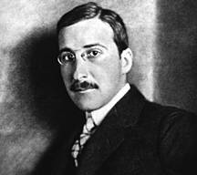

.Stefan Zweig [1881-1942].
Nếu tự tử hầu như luôn luôn là bức thông điệp cuối cùng gửi cho người đời, vậy thì cái chết của Stefan Zweig [1881-1942] hay Walter Benjamin tự tử cùng mùa xuân năm 1942 - người thì sống ở Braxin với vợ, người thì ở biên giới Tây Ban Nha – bây giờ nói lên điều gì?
Việc trốn cuộc đời mới đây hơn của Primo Levi, Bruno Bettelheim hay Jerzy Kovinski, những người bị nắm bắt bởi những nổi sợ hãi nào đó, phải chăng có những cội nguồn sâu xa nhưng bao giờ cũng hiệu lực: Sự dã man của chế độ Quốc xã? Nếu điều đó là đúng thì phải chăng có thể kết luận rằng trên một bình diện nào đó, trong những linh hồn bị hủy hoại nào đó, những kẻ theo chủ nghĩa Quốc xã lại là kẻ thắng cuộc? Tự sát sau khi đã có thể sống sót, phải chăng đây là sự thất bại cuối cùng của sự tồn tại, của cái hy vọng phù phiếm trong một thế giới mà những kẻ theo thuyết phủ định đang chiếm địa vị ưu thắng? Liệu có cần xem Auschwitz như một trái bom nổ chậm cài giữa trái tim nhân loại, như một cái gì mãi dai dẳng, một sự hành hình bất tận, nhằm để vĩnh hằng hóa những tội ác của nó, kéo dài những hậu quả hung hiểm của nó từ thế kỷ này sang thế kỷ khác? Bởi lẽ chúng nhiều không đếm xuể. Những cuộc tự tử, tức thời hay không giống nhau, có căn nguyên trong sự bùng nổ lương tri gây ra bởi chủ nghĩa Hitler.
Một tinh thần lớn lao tự hủy hoại cả khi xem ra có những lý do khách quan, bao giờ cũng vẫn là điều bí ẩn đầy âu lo và cần có một phương thức chữa trị. Phải chăng đấy là sự thú nhận riêng tư, một thông điệp được mã hóa, một tấm gương để noi theo? Phải chăng có ở đây, ẩn tàng trong mọi cuộc tự tử, một tội ác chống nhân loại? Chúng ta muốn biết là liệu một sự lựa chọn như vậy có thể thực hiện với đầy đủ sự sáng suốt của lương tri không? Liệu nó có thể giải thích được, biện minh được mà không phải là một sự yếu đuối đầy tội lỗi? Với chúng ta, những kẻ đi tìm ánh sáng, những con người tuyệt vọng này từng là những bậc thầy văn chương, là những ngôi sao băng, và chúng ta tự hỏi với niềm khắc khoải: Phải chăng họ chết vì đã quá minh mẫn, đã biết ra quá nhiều điều, hay là vì thiếu can đảm trước công việc đầy khó khăn là phải sống?
Phải chăng có những thời buổi mà thế sự thăng trầm, mà sự sống phải đầu hàng? Hẳn vậy, người ta không thể trách cứ ai muốn tỉnh giấc khỏi cơn ác mộng của lịch sử, thế nhưng chúng ta lại muốn Stefan Zweig đừng kết thúc cuộc đời mình, cái chết đó làm tim ta quặn đau và làm chúng ta trở nên côi cút, cho đến hơn 50 năm sau đó. Một nhà văn như bản thân ông, người đã cho chúng ta biết bao vui thích, con người trí thức khiêm nhường từng phụng sự cho mọi tài năng đó, con người theo chủ nghĩa hòa bình, kẻ duy nhất đã cùng với Romain Rolland, nhà văn nước Pháp, đã không nhường bước trước cơn điên rồ “ái quốc” của chủ nghĩa Quốc xã năm 1914 đó liệu có quyền tự hiến mình cho Tử Thần không? Hẳn vậy, việc tự tử của Stefan Zweig là chuyện riêng tư của đời ông, nhưng cũng chính là cuộc sống riêng tư của đời người đã bị lịch sử tấn công vào năm 1942, và đấy là tội ác ghê hồn của bọn Quốc xã, cái mà chúng ta không bao giờ ngừng chống lại. Khi tự chọn cho mình cái chết, Stefan Zweig đã không có sự thảnh thơi để nghĩ rằng rồi chúng ta sẽ mất ông đi, và đối với chúng ta, những kẻ sống sau đại chiến, rằng quyết định tự tử của ông vẫn tiếp tục làm cho chúng ta bối rối.
Ông đã rời bỏ nước Đức năm 1934 với một tài năng thiên bẩm đáng kinh ngạc, và đã không ngừng đi khắp thế giới trước khi đến Braxin theo lời mời của chính phủ nước này phần nào ngoài chủ định. Mặc dầu có bà Lotte, vợ ông, ông vẫn cảm thấy cô đơn kinh khủng, xa những bạn bè, bị loại ra một cách nhân tạo khỏi cơn bão táp lịch sử, buộc phải ngồi nhìn ở tận nơi cùng trời cuối đất trước sự tàn phá một nền văn minh, nền văn minh của chính ông, của châu Âu, của Kafka và Freud, của những bạn bè ông, Rilke, Verhaeren hay Romain Rolland. Khoảng cách đã không tác động gì được đến điều này, châu Âu đang bị thiêu cháy trong cơ thể của nó, với máu và lửa trong xương tủy của nó. Không nghi ngờ gì ông đã tự trách mình, trong những đêm khuya trằn trọc, vì đã rời bỏ con tàu, từ bỏ những gì thuộc về mình.
Thư tín không còn được chuyển nữa, không gì có thể an ủi sự bất lực của ông và những hình ảnh đẹp đẽ của vũ hội hóa trang đã không có tác dụng gì đến nỗi sầu xa xứ, mà trái lại còn khơi động thêm lên. Như thể ông cảm thấy mình xa lạ, lạc lõng, không còn tồn tại, toát mồ hôi giữa cái đám đông đang nhảy múa theo điệu samba đến điên cuồng! Cần hình dung ra cái con người già nua đó đang quay cuồng với mọi cảm nghĩ, bị tước đi mọi mục đích sống, thương khóc các quán cà phê ở thành Vienne và những buổi chuyện trò, đang lạc lõng cùng với người vợ mình là Lotte giữa những người Braxin đầy hoan lạc.
Tư liệu
Bức thư tuyệt mệnh của Stefan Zweig
Trước khi từ giã cuộc đời thật sự tự nguyện và hoàn toàn minh mẫn, tôi thấy cần thiết phải làm tròn nghĩa vụ cuối cùng: Nói lên lời cám ơn sâu sắc tới đất nước Braxin, xứ sở kỳ diệu đã cho tôi và công việc nơi tôi nương náu thật chân tình và hiếu khách.
Tôi ngày càng yêu mến xứ sở này và lúc này không muốn tạo dựng cuộc sống mới ở bất cứ nơi nào khác, khi thế giới ngôn ngữ của tôi đã biến mất đối với tôi và tổ quốc tinh thần của tôi, châu Âu, đã tự hủy diệt.
Tuy nhiên, đã qua tuổi 60, cần phải có những năng lực phi thường để bắt đầu lại toàn bộ cuộc đời mình mà sức lực tôi đã cạn qua những tháng năm lưu lạc. Bởi vậy tôi cho rằng tốt hơn là ngẩng cao đầu kết thúc đúng lúc một cuộc đời mà lao động trí óc luôn luôn là niềm vui thanh khiết nhất và tự do cá nhân là tài sản quý giá nhất trên đời.
Xin gửi lời chào đến tất cả bè bạn của tôi. Mong sao họ còn nhìn thấy bình minh sau đêm dài! Còn tôi, tôi quá sốt ruột, tôi đi trước họ.
STEFAN ZWEIG
Pétropolis 2.2.1942